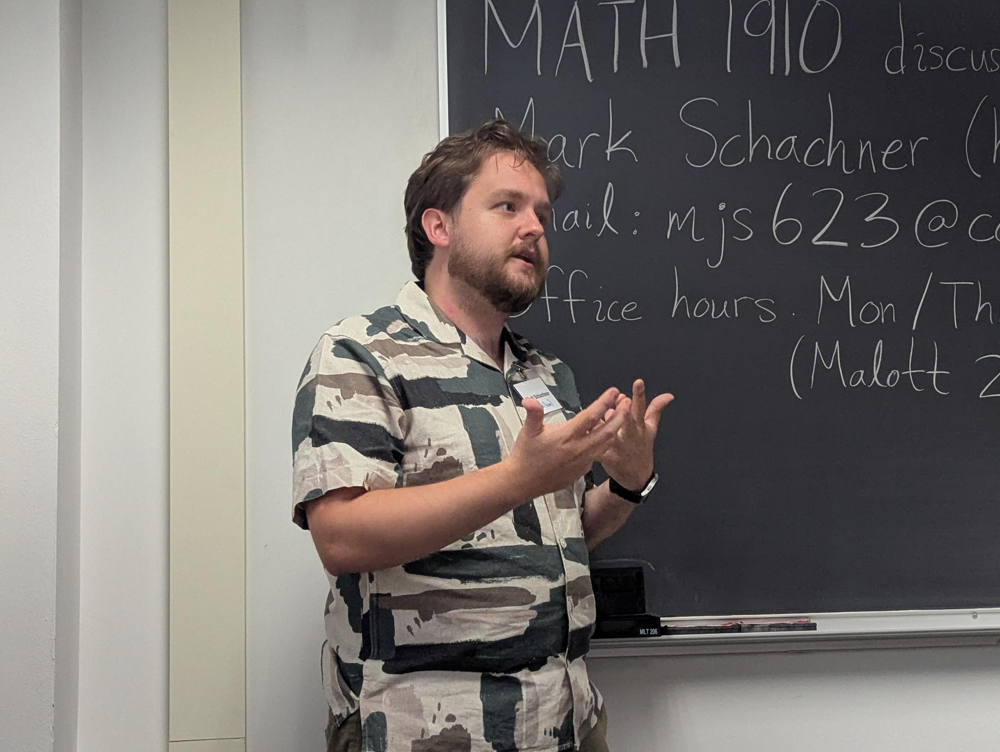
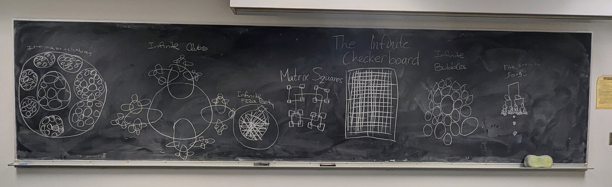

Mark Schachner
Mathematics educator & Ph.D. candidate, Cornell University
I am a Ph.D. candidate in mathematics at Cornell University, graduating in spring 2027. I have taught mathematics at the university, high school, and elementary levels, both in classrooms and in a correctional facility.
I care deeply about impactful pedagogy and creating accessible, inclusive environments for learning.

Teaching experience on and off campus
My teaching spans four semesters as a TA and instructor of record at Cornell, college courses taught through the Cornell Prison Education Program, a high school seminar, and summer outreach with underserved students.
Instruction
-
Jan – May 2026
Adjunct faculty, Cornell Prison Education Program
Cayuga Community College · Auburn, NY
Instructor of record for MATH 112 Contemporary Mathematics. Developed and taught weekly lessons in mathematics to incarcerated students at Cayuga Correctional Facility.
-
Sep 2025 – Jun 2026
Instructor, Ithaca High School Math Seminar
Ithaca High School · Ithaca, NY
Developed and taught a mathematics seminar curriculum for students in grades 10–12, including proposing and supervising independent student projects.
-
Jan – Feb 2025
Instructor, Cornell Prison Education Program
Cornell Mathematics Department · Ithaca, NY
Instructor of record for MATH 112 Contemporary Mathematics, teaching weekly lessons to incarcerated students.
-
Spring 2024
Instructor of record, MATH 1120 Calculus II
Cornell Mathematics Department · Ithaca, NY
Instructor for a lecture section of Cornell's second-semester calculus course.
-
Summers 2020 – 2021
Teaching Assistant / Counselor, BEAM
Bridge to Enter Advanced Mathematics · Los Angeles, CA
Summer outreach program helping underserved students enter advanced study in mathematics. Supervised problem sessions and worked one-on-one with students on critical thinking and creative problem-solving.
Teaching assistantships at Cornell
-
Fall 2023
Recitation TA, MATH 2940 Linear Algebra for Engineers
Gave weekly recitations using active learning techniques.
-
Spring 2023
Recitation TA, MATH 2210 Linear Algebra
-
Fall 2022
Recitation TA, MATH 1910 Calculus for Engineers
Education
- Ph.D., Mathematics — Cornell University, expected 2027
- M.S., Computer Science — Cornell University, 2024
- B.S. with Honors, Mathematics — The University of Chicago, 2021
Pedagogy & professional development
- Four talks in the Cornell Teaching Seminar, including the three-part series Toward an Accessible Mathematics Classroom (2023–2025)
- Early Graduate Teaching Cohort, Cornell Center for Teaching Innovation (2026)
Course evaluations
From official Cornell course evaluations for MATH 1120 Calculus II (Spring 2024), where I was instructor of record.
“I have taken this class before and failed it, so I came in uneasy. Mark did a great job filling me up with confidence and worked with me to make sure I felt comfortable. His lectures are very helpful for developing a strategy for tackling problems. It was easy to tell he cared about the course and how we all did during the semester. He was great.”
“Absolutely amazing instructor, very clear with examples and engagement and fostered a great learning environment. … Probably my favorite professor this semester and it was not close.”
MATH 1120, Spring 2024
“My instructor was great and really increased my morale and overall confidence about calc. I have received the best grades I've ever gotten on exams since starting my time at Cornell, and he played a great role in that.”
MATH 1120, Spring 2024
“I've now taken this class twice and the experience feels completely different. Mark actually taught us the material in a clear manner, and despite the class being held really very early, I went every single time optimistic that I would learn something new.”
MATH 1120, Spring 2024
“Mark was an awesome teacher and made 8:40 am lectures engaging.”
MATH 1120, Spring 2024
“Mark did a good job of creating an atmosphere where people were not afraid to ask questions. He also did a good job of helping us work together.”
MATH 1120, Spring 2024
“Very great instructor! The best one in Math 1120, without a doubt! Very outgoing, knew the material well, and was always willing to help.”
MATH 1120, Spring 2024
From earlier courses
“Mark was very accessible and happy to explain the topic in various ways until it clicked for us. He was always very passionate and ensured we felt comfortable with material before leaving discussion.”
MATH 2940 Linear Algebra for Engineers, Fall 2023
“The TA really cared about his students, and you could tell that.”
MATH 2940 Linear Algebra for Engineers, Fall 2023
“TA Schachner was always so patient and nice. I really liked this recitation because I felt like I could ask any and all questions.”
MATH 2210 Linear Algebra, Spring 2023
“Always full of energy during our discussions. They also actively try to include everyone and even went out of their way to continuously check up on everyone while working.”
MATH 2210 Linear Algebra, Spring 2023
“Mark was amazing. Extremely knowledgeable, organized and willing to help.”
MATH 2210 Linear Algebra, Spring 2023
“Very helpful. Looked forward to it every week.”
MATH 2210 Linear Algebra, Spring 2023
Outreach and mentorship
As outreach chair of Cornell's chapter of the Association for Women in Mathematics (2023–2026), I planned and led the Julia Robinson Math Festival, a day-long math outreach workshop, and organized the Mathematical Puzzles workshop for Cornell's Expanding Your Horizons event.
In spring 2023 I taught Little Circle, a Cornell outreach program for students in grades 3–5, where we explored infinity, fractals, and more. I also organized the mathematics department's Ph.D. mentoring program, matching incoming doctoral students with experienced mentors.
